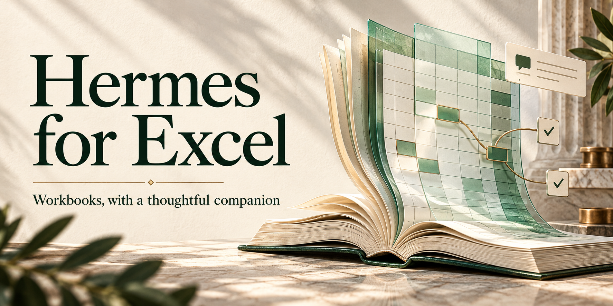

Spreadsheets · Verified edits
A thoughtful companion beside your workbook.
Read across sheets, work with formulas, and review changes with Hermes inside Excel.

Inside the project
Explore the source for details and setup.
- 01Workbook chat and cross-sheet reads
- 02Formula rebasing to the destination
- 03Post-write verification and guarded Undo
Before you begin
Project notes
Compatible Hermes typed-chat support required. Automated installation is Windows-only. Browser mocks do not certify live Excel behavior. MIT.
Project descriptions follow the public documentation. Consult the repository for current requirements, limitations, and license terms.